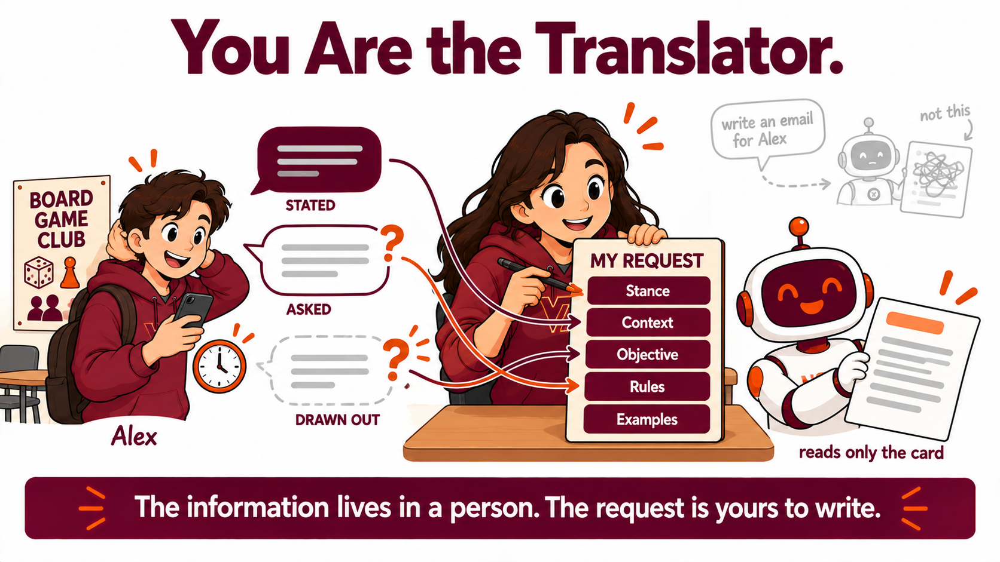

By the end of this lecture, students will be able to:
- Name the three routes by which information reaches a request, which are stated information, asked information, and drawn out information.
- Say why stance and examples are the two SCORE elements a student cannot supply from their own head when the task belongs to somebody else.
- Interview a task owner and obtain the context, the objective, the rules, the stance and an example from that owner.
- Write a request carrying all five SCORE elements and name which owner reply supports the stance element and which supports the examples element.
- Read a missing information report that names gaps by SCORE element, and say what a skipped question cost the finished message.
- Say what they will ask a person before writing a request on that person's behalf.
On Tuesday you built a request for a task of your own. The stance and the example came out of your own head, because it was your task and you already knew what you wanted and what a good answer would look like.
Today the task belongs to somebody else. You are writing a request on behalf of a student officer of a campus club who needs an email sent, and you do not know their situation, their limits, or what they would call a good result. Every one of the five SCORE elements has to come out of that person and into your request, and they are not going to hand all five over in a single speech.

Information reaches a request by one of three routes.
Stated information arrives in the opening handoff. The owner leads with it and you write it down.
Asked information arrives because you put a direct question. The owner knows it perfectly well and simply had no reason to mention it.
Drawn out information is a preference the owner holds without having put it into words. A question about what would disappoint them, or about which of two readers matters more, brings it into the open.
Any of the five SCORE elements can arrive by any of the three routes. The routes describe how information travels between two people. The five elements describe what a finished request contains.
Take the handoff on the card and answer three questions about it out loud.
What has this person already told you, with no question asked.
What would you have to ask about, which this person knows and simply did not mention.
What has this person probably never put into words, which you would have to draw out with a question about consequences or about who matters more.
There is no trick in it. The point is that you can tell the three apart before you are under time pressure.
Before you meet the owner:
- You are writing on behalf of somebody whose situation you do not know. Which of the five SCORE elements worries you most, and why that one?
- On Tuesday nothing asked you for a stance or an example. Today a person has both and has not mentioned either. What is different about getting them from a person?
Your instructor now runs a whole demonstration on screen. Six things get pasted into one conversation, in order.
There is one machine in that conversation and the machine does two different jobs.
Until the words FINAL REQUEST are sent, the machine is Alex. Alex owns the task, Alex knows the club, and Alex answers what is asked and volunteers nothing beyond the answer.
Once the word PRODUCTION is sent, the machine becomes the writer of the email. The writer reads the FINAL REQUEST and reads nothing else. Everything Alex said earlier in the conversation is unavailable to the writer unless somebody carried it into the request.
Your own job sits between Alex and the writer. You take information out of Alex and you put it into the request. Whatever you carry across is binding on the email. Whatever you leave behind gets decided by the writer without you.
Watch what the writer reports as missing, and what the finished email leaves out because of it.
Your instructor runs this prompt on screen. You do not paste it yourself.
Alex states the task and stops. Alex is a student officer of the Campus Board Game Club, and Alex wants a 180 to 220 word email sent to the students who came to the introductory meeting and did not come to the next meeting.
Your instructor runs this prompt on screen. You do not paste it yourself.
Alex answers the question that was asked. The recipients are 28 students, and the next meeting is Wednesday 18:00 to 18:45 in the same room.
Your instructor stops asking at that point, which is what a hurry looks like, and writes the request.
Your instructor runs this prompt on screen. You do not paste it yourself.
Five fields go out and two of the five are empty. The stance field is empty because nobody asked Alex what the email should be. The examples field is empty because nobody asked Alex what a good version of the email looks like.
Alex acknowledges the request and changes nothing in it.
Your instructor runs this prompt on screen. You do not paste it yourself.
The writer answers the production command with two things in one reply.
The first is a list under the heading "Missing information, by element", carrying one short verdict for each of the five SCORE elements. Stance comes back not supplied and examples comes back not supplied, because both fields went out empty. Read the other three lines off the screen as they arrive, because the wording of those three moves from one run to the next.
Now look at what the report does not do anywhere on those five lines. The report never names the club's weekly time commitment. A report of this kind is a statement about your request and about nothing else. It can say that your request lacks something. It cannot tell you what the missing thing is, because the answer belongs to Alex.
The writer names what is absent and fills none of it. Alex is sitting in the same conversation holding every answer, and the writer does not go and get one.
The second is the email itself, written from the four filled lines of the request alone. Read the email and ask what a student who came to one meeting would still not know.
The optional team is missing from the email. The team requires a weekly forty five minute meeting and about sixty minutes of preparation, and a reader deciding whether to come back would want to know about that commitment.
The team is missing from the email because the request never carried the team, and the request never carried the team because nobody asked Alex about the team.
Your instructor runs this prompt on screen. You do not paste it yourself.
The writer returns about nine choices it made that the request did not specify, each one tagged with a SCORE element. The subject line, the greeting, the closing, how the email opens, the order the information arrives in, and what the email chooses to emphasize. The exact list changes from one run to the next, so read the one on screen.
Every entry on that list is there because the request left that choice open. A request that specifies the order of the sections takes the order of the sections off the list. The length of this list is a measurement of your own request.
The element tags are the machine's own classification and some of the tags are arguable. Say so out loud if you think a greeting belongs under rules and not under context.
Asking a question now puts Alex back in the conversation.
Your instructor runs this prompt on screen. You do not paste it yourself.
Two questions in one message, and both empty fields close.
Alex wants recipients to be able to choose participation that fits the time each recipient has available, and Alex values sustainable participation over a high count of return visits. Alex names the outcome that would be disappointing, which is the email the room has just read.
Alex also supplies three headings in order: "What can I try?", "What would I commit to?", "How can I respond?"
Neither answer was volunteered. Both answers were available for the asking, for the whole time.
Carry these into your own interview:
- The writer named the gaps and filled none of them, while Alex sat in the same conversation holding every answer. Whose job was it to close them?
- Two questions recovered a stance and an example. What made those two questions work, when "what do you want" would not have?
Copy this block and paste it into Hokie AI to begin your session.
Twelve minutes, one conversation, at most ten exchanges. Everything you do from here stays in this one thread, including your reflection at the end, because the export of this thread is what you submit.
Alex answers what you ask and volunteers nothing. Three well aimed questions beat eight vague ones.
The same two jobs apply in your conversation. Alex until you send FINAL REQUEST, the writer of the email after you send PRODUCTION, and your request is the only thing that crosses between them.
Move one. Interview the owner until you can fill all five SCORE elements. The owner has already stated the objective. Ask directly for the facts about the recipients and for the rules the email has to obey. Then get the two that nobody offers you, which are what the owner wants the email to be and what the owner thinks a good version looks like. A question about what would disappoint them works. A question about a previous message that worked well gets you the structure.
Move two. Write your own request and send it in one message beginning with the words FINAL REQUEST on its own line, with five labeled fields, which are Stance, Context, Objective, Rules and Examples. On the Stance field and the Examples field, name the owner reply that supports what you wrote, or write that you did not ask. Write this yourself. The owner will not write it for you and will not repair it.
Move three. Send the single word PRODUCTION and read what comes back. From that point the machine is writing the email and your request is the only thing it reads. If a missing information report arrives, that is a result and not a failure. It tells you which element you left empty. Go back to the owner, ask the question, and send a revised FINAL REQUEST.
A report tells you that your request lacks something. A report will not tell you what the missing thing is, because the answer belongs to Alex. Take the flagged element back to Alex as a question. Five filled fields can still produce an email that leaves out something a recipient needs, so read your own email against what Alex actually told you.
Move four. Send WHAT DID YOU DECIDE and read the list of choices your request left open.
- Click Copy opening marker and paste it into Hokie AI to begin this block.
- Interact with Hokie AI: ask questions, explore, respond. All of this exchange belongs to this block.
- When finished, use the Copy closing marker button below to close the block in your thread.
When you have finished your exchange, copy this closing marker and paste it into Hokie AI to close the block.
Everybody in this room interviewed the same owner about the same email. The emails are not the same, and the difference came from the questions.
Hands up if your email mentions the weekly forty five minute meeting and the sixty minutes of preparation. Your instructor reads the room out loud.
Hands up if every one of your five fields was filled in and your email still left out something a recipient needs. A request that looks complete is not the same as a request that carries what a reader needs, and nothing in the conversation will tell you the difference except Alex.
Then three or four of you say, in one sentence each, the question you asked that changed your request.
Take these into the reflection:
- Alex answered every question that was asked and volunteered nothing. Was that unhelpful, or is it an ordinary way for a person to behave?
- The email your instructor produced from one factual question was fluent, polite and correct in every fact it contained. What was wrong with it, and would you have noticed if you had not known what was missing?
Turn to the person next to you. Say which question changed your request most AND name one thing in your email that only exists because you asked for it AND name one thing you still did not ask the owner about.
Three minutes. You interviewed the same person about the same email, so whatever separates your two results came from what you chose to ask.
Now write your reflection in this same conversation, in your own words and without help from the AI. Put it in a block that begins with R4.2.1 on its own line.
Your reflection needs all four of these. Name one thing the owner told you only because you asked for it, and say what your question was AND say which of the five SCORE elements was hardest to obtain from a person, and why that one was harder than the others AND say what a question nobody asked cost a finished email, using either your instructor's email or your own AND say what you will ask first the next time you write a request on somebody else's behalf, and why that question first. Respond to all four.
The fourth is the one that separates a good reflection from an adequate one. Naming a question is not enough by itself. Say why that question goes first, and take the reason from what happened in your own interview instead of off a card.
Write 80 to 160 words.
Write your response in the box below (target: 80 to 160 words), then click Copy and paste into Hokie AI.
Export this thread as a .txt file, then upload it to the Canvas assignment. Your work is not submitted until Canvas shows your file.
Open the Canvas assignment